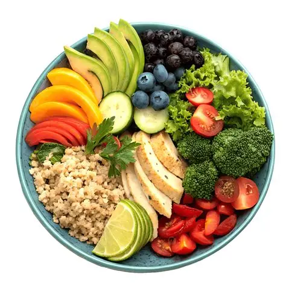
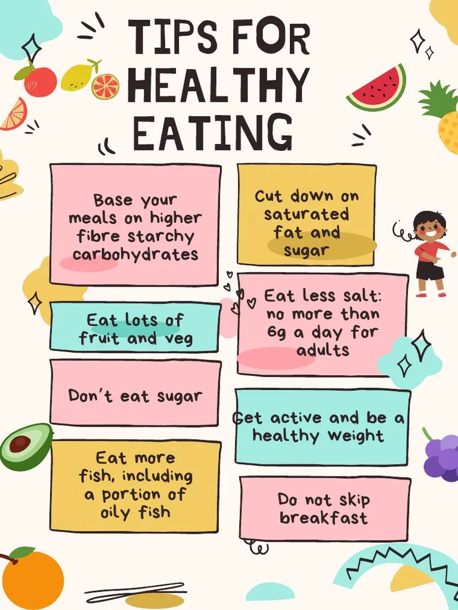

What are the benefits of eating healthy?
healthy diet has many benefits, including building strong bones, protecting the heart, preventing disease, and boosting mood.
We need food for energy.
we servive for few days without food
food is breakown in our body to get energy in the form of ATP.
Healthy foods are nutrient-rich, minimally processed foods that support overall health, including fruits, vegetables, whole grains, lean proteins, and healthy fats.

healthy diet has many benefits, including building strong bones, protecting the heart, preventing disease, and boosting mood.
Defination
Nutrition is the study of nutrients in food, how the body uses them, and how diet affects health, focusing on key components like macronutrients, micronutrients, and water.
